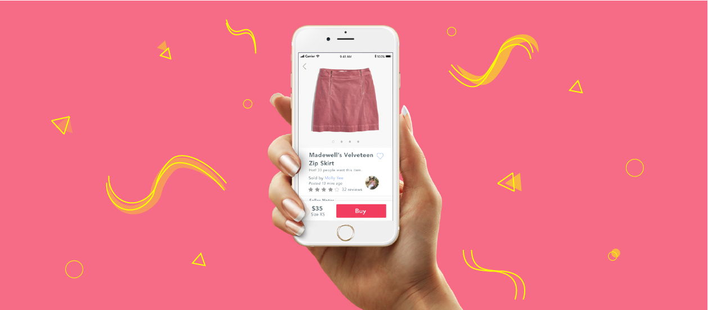
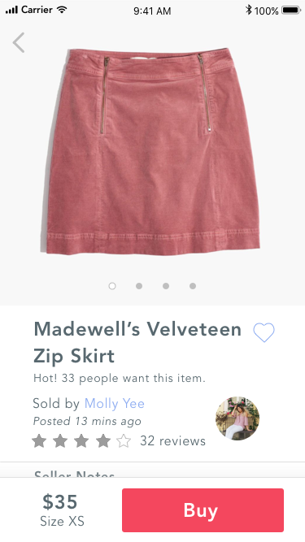
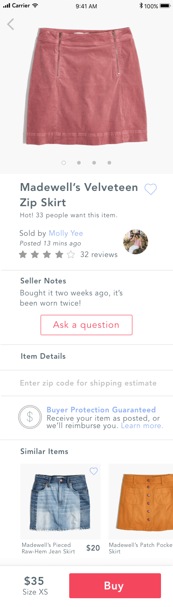

Mercari
App redesign for Mercari, a customer-to-customer marketplace.
UI and UX design
Design Challenge
October 2017
How might we establish trust and help users weave through lots of info?
I wanted to make buying from a stranger easy. Meaning within seconds, communicate the right information so buyers are confident that the item they’re buying will show up the way they expect.
To do this, I aimed to predict the biggest questions the buyers had, display answers to those questions, and make all other information invisible until they wanted it.

Thinking through the customer experience, the first thing is to help users quickly figure out whether or not this item is a fit.
The basics were
price, brand, item condition, and fit.
I focused on drawing the user's eyes to these priorities first.
The next most important thing was
helping buyers establish that the item will come exactly as they expect. .
To bridge buyer expectations, I replaced ambiguity with exact product details.
Indicators such as "Like New" could have relative meaning.
Having sellers fill out brief structured forms that explain times worn gives under "Seller Notes" gives a more exact picture of the condition.
Revealing unknowns such as arrival date and exact shipping cost by entering zip codes takes away any guesswork.
Also, accounting for inaccurate information or damaged products by guanrateeing money backgives an extra layer of safety for users.
Furthermore, to align the app's design with Mercari's business goals of increasing purchases, I also added elements that promote a sense of urgency.
The posting time and the item's popularity combined with increasing purchase confidence pushes users to purchase.

These were the initial designs that I worked with.
My process in the redesign was first not to look at what was already available, but carefully imagine the thoughts and feelings of the user before diving into visual elements.
Now let's talk details.
My UI goals were to declutter information, make it easy to scan sections, make all call-to-action's reachable with the thumb, and make the app feel like a lively marketplace.
To do this, I gave section titles the breathing space of 75% of the title font height. I also avoided white sections against gray backgrounds because the gray space takes up more space, and used clean lines to indicate breaks.
To allow for scanning sections, I used 2 formats- consistent bolding and larger font sizes for titles and regular font for content.
One section upon scrolling down was also purposely left collasped, so that users could click on it, and discover that all sections are collapsable.
All actionables can be reached with the thumb without needing to let go of the bottom of the phone.
Traditionally placed in the top corner of many other apps, the favorites button is now moved below the picture to be easily reached.
The product picture roughly half the size of the screen so users can reach the bottom of the image and swipe through product pictures with one hand.
The purchase button is closest to the thumb, and floats there with the fixed position footer.
To minimize distractions from the CTA's, but also be able to highlight links, I choose two colors- a friendly red, and a cool purple.
I wanted a lively color that made the marketplace feel energized. The stimulating red that colors the two main CTA's is then balanced with the cool purple, which also happens to be the favorite color of adolescent females.
Takeaways
Good design is a good conversation.
Bad designs talk over their users- bombarding users with info, features, and colors that users aren’t asking for.
I want to strive to create digital experiences that feel alive, able to respond to the things users are indicating, and keep other information and features silent until the conversation veers off in that direction.